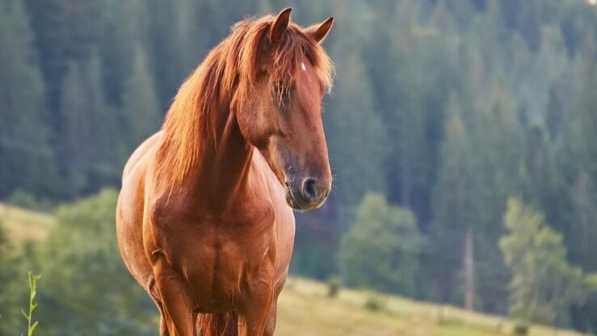
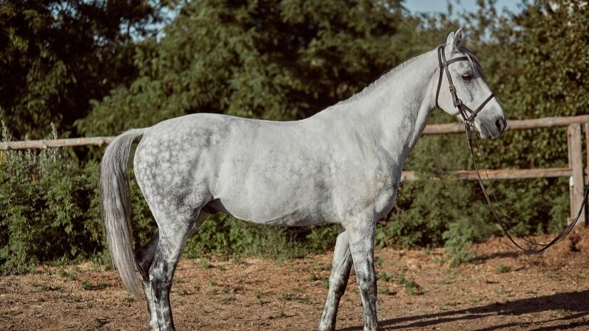
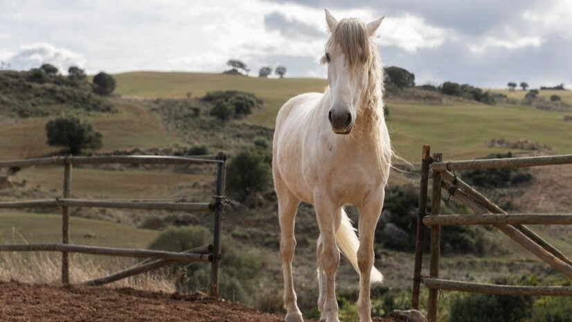
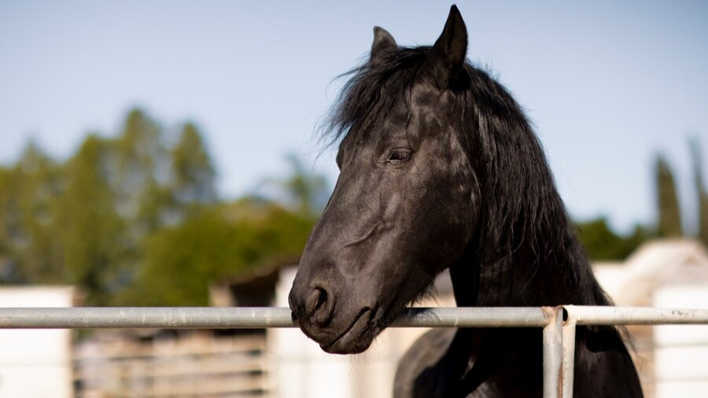
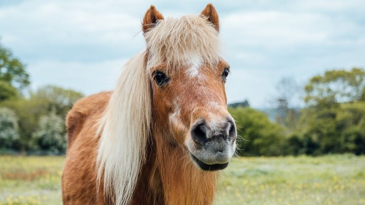

Descubre la Magia a Caballo: Explora los Jardines del Sueño con Nuestros Paseos Ecuestres Exclusivos
¡Bienvenidos al lugar donde la serenidad se encuentra con la aventura, y la naturaleza se fusiona con la elegancia! Estamos emocionados de presentarles la experiencia única de pasear a caballo en nuestro encantador hotel rural.
Imaginen un paseo a caballo a través de nuestros pintorescos senderos, donde la conexión con la naturaleza se vuelve palpable. En este viaje ecuestre, nuestros caballos bien entrenados no solo serán sus fieles compañeros, sino también sus guías a través de un mundo encantado. Sintiéndose como exploradores modernos, serán llevados a través de bosques encantados donde la luz del sol se filtra entre las hojas, campos verdes que se extienden hasta donde alcanza la vista y caminos serpenteantes que revelan vistas sorprendentes en cada curva.
En Jardines del Sueño, la equitación es más que una actividad; es una experiencia inclusiva que abraza a jinetes de todos los niveles. Ya sea que sea un jinete experimentado ansioso por desafíos o esté dando sus primeros pasos en el mundo ecuestre, nuestros paseos a caballo son diseñados para adaptarse a todos los niveles de habilidad y comodidades.Para aquellos que son nuevos en la equitación, nuestros instructores expertos estarán a su disposición para ofrecer lecciones introductorias, asegurándose de que se sientan cómodos y confiados antes de aventurarse en los senderos.
Cada uno de nuestros caballos está cuidadosamente seleccionado y entrenado para garantizar no solo la seguridad sino también la conexión emocional con nuestros jinetes. Creemos que la relación entre el jinete y el caballo es fundamental para una experiencia ecuestre significativa, y en Jardines del Sueño, nos enorgullece presentarles a estos maravillosos compañeros, cada uno listo para ser parte de su inolvidable paseo a caballo.
En Jardines del Sueño, la experiencia no termina con el paseo a caballo; es solo el comienzo de su indulgencia. Después de explorar la naturaleza a caballo, le invitamos a sumergirse en el lujo de nuestro spa, donde tratamientos rejuvenecedores y masajes relajantes le esperan. Nuestras áreas de relajación al aire libre ofrecen tranquilidad, mientras que nuestro restaurante de clase mundial le brinda una experiencia culinaria exquisita.

Nuestos caballos
Nobleza
- Nobleza es un caballo majestuoso de color marrón rojizo con una melena y cola exuberantes. Su pelaje resplandece al sol, y sus ojos ambarinos reflejan su inteligencia y gentileza. Con una estatura imponente, Nobleza emana fuerza y elegancia. Su temperamento sereno y paciente lo convierte en el compañero ideal para jinetes de todos los niveles, destacándose por su lealtad incondicional y su capacidad para brindar calma y seguridad. A pesar de su serenidad, muestra momentos juguetones, revelando su lado curioso y lúdico. Nobleza no solo será un compañero en los paseos a caballo, sino también un amigo leal que cautivará los corazones de quienes compartan su compañía.

Brisa
- Brisa es un hermoso caballo de color gris claro salpicado de lunares blancos, destacándose por su pelaje reluciente y elegante figura. Su mirada curiosa refleja una inteligencia aguda y una naturaleza amigable. Brisa, además de su apariencia encantadora, posee un temperamento alegre y juguetón, brindando vitalidad y diversión a su entorno. Su lealtad inquebrantable y empatía natural la convierten en una amiga confiable y comprensiva. Brisa no solo será una compañera en los paseos a caballo, sino también una presencia alegre que iluminará los días de quienes tengan el privilegio de conocerla.

Elsa
- Elsa es un yegua de pura elegancia con un pelaje blanco y suave, su figura esbelta y sus ojos expresan serenidad. Más allá de su apariencia celestial, Elsa posee un temperamento calmado y afectuoso, convirtiéndola en la compañera perfecta para momentos de reflexión y conexión. Su lealtad inquebrantable y capacidad para establecer conexiones profundas hacen de Elsa no solo una compañera en los paseos a caballo, sino también una serena confidente y amiga fiel que brindará paz y conexión a quienes tengan el privilegio de conocerla.

Ferdinand
- Ferdinand es un magnífico caballo de color negro intenso, con un pelaje lustroso, musculatura poderosa y una melena elegante. Su mirada inteligente y curiosa revela una nobleza que va más allá de su imponente apariencia. A pesar de su fortaleza física, Ferdinand es un compañero afectuoso y leal, estableciendo conexiones profundas con aquellos que comparten su compañía. Su temperamento equilibrado y su lealtad inquebrantable lo convierten en un amigo carismático y excepcional para los paseos a caballo, dejando una huella imborrable en quienes tienen el privilegio de conocerlo.

Canela y Aurora
- Canela y Aurora, hermanas inseparables, conforman un dúo encantador de yeguas que añaden un toque especial a cada paseo a caballo. Canela, con su pelaje marrón cálido y mirada expresiva, aporta afectuosidad y paciencia, convirtiéndola en la compañera perfecta para establecer conexiones emocionales profundas. Por otro lado, Aurora, de belleza celestial con su pelaje blanco resplandeciente, irradia paz y tranquilidad con una naturaleza compasiva que la hace una amiga confiable. Juntas, no solo son excepcionales compañeras de paseo, sino también hermanas leales que añaden belleza y serenidad a la vida de aquellos que tienen el privilegio de conocerlas.

Caramelo
- Caramelo es un encantador pony de tamaño mediano con un pelaje suave y sedoso de color marrón cálido y una adorable mancha blanca en la frente. Su naturaleza afectuosa y amigable lo convierte en el compañero perfecto para jinetes de todos los niveles. Con una disposición juguetona y un andar suave, Caramelo promete brindar una experiencia de montar placentera y emocionalmente enriquecedora. Proviene de un entorno amoroso y ha sido criado para desarrollar conexiones especiales con los seres humanos, listo para ser parte de nuevas aventuras y crear momentos inolvidables en cada paseo. ¡Prepárate para disfrutar de la magia de Caramelo en tus travesías a caballo!

Reservas
Principiantes
- Descripcion:Sumérgete en la experiencia de montar a caballo mientras exploras paisajes pintorescos y aprendes las bases de la equitación. Nuestros guías expertos te acompañarán en este paseo suave y seguro, perfecto para quienes dan sus primeros pasos en el mundo ecuestre.
- Duración: 1h 00min
- Precio: 40€
Experimentados
- Descripcion: Para aquellos con cierta destreza en la equitación, ofrecemos un paseo de 2 horas que combina la emoción de la velocidad controlada con la belleza del entorno natural. Explora caminos más desafiantes y experimenta la conexión única que se forma entre jinete y caballo.
- Duración: 2h 00min
- Precio: 80€
Expertos
- Descripcion: Los jinetes experimentados encontrarán en este paseo una aventura emocionante y desafiante. Recorre terrenos variados, desde suaves colinas hasta senderos más técnicos, mientras te sumerges en la verdadera magia de la equitación. Nuestros caballos bien entrenados te llevarán a través de una experiencia que despierta todos tus sentidos.
- Duración: 3h 30min
- Precio:120€
↑Volver